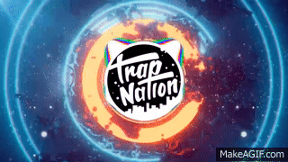

Name: M.Hanif F
Class: 9.6/17
Grateful - Neffex
Always do it on my own
So I gotta get through it
And the only thing I know
Is to love what I'm doing
Never give up, never slow
'Til I finally prove it
Never listen to the no's
I just wanna keep moving
Keep my head up when I act
Head up, that's a fact
Never looking back
I'ma keep myself on track
Keep my head up, staying strong
Always moving on
Feel I don't belong
Tell my thoughts to move along
Push myself to be the best
Die with no regrets
Live with every breath
See my message start to spread
And I had so many dreams
Then you hit your teens
Life ain't really what it seems
Try to find out what it means
Always do it on my own
So I gotta get through it
And the only thing I know
Is to love what I'm doing
Never give up, never slow
'Til I finally prove it
Never listen to the no's
I just wanna keep moving
Yeah, I put out all this art
It's my only medicine, yeah
Everything I do
I'm just being genuine, yeah
I'm sick of being screwed
Feel my own adrenaline, yeah
I do just what I do
And I hope you let me in, let me in, yeah
I'm grateful, oh yeah
Able, oh yeah
I'm stable, oh yeah
No label, oh yeah
You know me, I have
Only a path
I'm lonely, but damn
I'm going to win, yeah
I don't want no fake love
I want the real stuff
Everybody listen up
'Cause I'll only say it once
I'm gon' show you all the path
If you want it bad
I'm gon' show you where it's at, yeah
How you can get it back, yeah
'Cause I ain't never done
I'll be number one
Working hella hard
Until I get just what I want, yeah
Rise just like the sun, yeah
Fatal like a gun
Shooters gonna shoot
And I'm gon' shoot until I've won, yeah
Always do it on my own
So I gotta get through it
And the only thing I know
Is to love what I'm doing
Never give up, never slow
'Til I finally prove it
Never listen to the no's
I just wanna keep moving
Yeah, I put out all this art
It's my only medicine, yeah
Everything I do
I'm just being genuine, yeah
I'm sick of being screwed
Feel my own adrenaline, yeah
I do just what I do
And I hope you let me in, let me in, yeah
I'm grateful, oh yeah
Able, oh yeah
I'm stable, oh yeah
No label, oh yeah
You know me, I have
Only a path
I'm lonely, but damn
I'm going to win, yeah
